-
CONVERTIDOR
En esta parte puedes encontrar tips que te permiten realizar conversiones que son fundamentales en la temática satelital.
- dB a dBi:
dB + 2.14. - dB a dBm:
dB + 30 - Watts a dB:
10 log (Watts)
- Ft= 3,28x(Metros)
- Km x 1,609
- Km x 1,852
- 10 log (dbm x 103)
Metros a Pies
Km a Sm
Km a Mn
Watts a dBm:
ESCALA DE FRECUENCIAS:
- Khz (Kilo Hertz x 103
- Mhz (Mega Hertz x 106
- Ghz (Giga Hertz x 109
- Thz (Tera Hertz x 1012
- Phz (Peta Hertz x 1015
- dB a dBi:
-
GLOSARIO DE TERMINOS
- C: Velocidad de la Luz 3x108
- C/N0: Portadora a ruido espectral
- Efecto Doppler: Se presenta cuando el desplazamiento de la fuente provoca una variación de la frecuencia recibida por tal motivo se obtiene consecuencias como (Desintonizacion del receptor-Distorsión del espectro)
- F: Frecuencia
- FSL: Perdidas en el espacio libre
- GEO: Una órbita geocéntrica por encima de la órbita geosíncrona de 35.786 km; también conocida como órbita muy excéntrica u órbita muy elíptica
- HPA: Amplificador de alta potencia
- IF: Frecuencia intermedia
- IRL: Nivel isotrópico de recepción
- LEO: Una órbita geocéntrica a una altitud de 0 a 2.000 km.
- LNA: Amplificador de bajo ruido
- MEO: Una órbita geocéntrica con una altitud entre 2.000 km y hasta el límite de la órbita geosíncrona de 35.786 km. También se la conoce como órbita circular intermedia.
- Órbita de Mólniya: Es un tipo de órbita muy elíptica con una inclinación de 63,4º y un periodo orbital de unas 12 horas.
- RSL: Nivel de recepción de la señal.
- Rx: Recepción.
- Tx: Transmisión.
-
FORMULAS
- 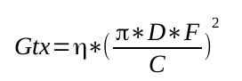
- 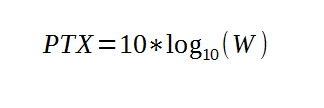
- 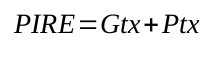
- 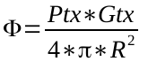
- 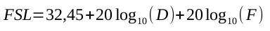
- 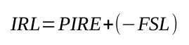
- 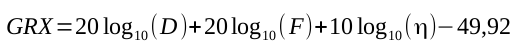
- 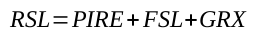
- 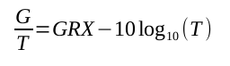
- 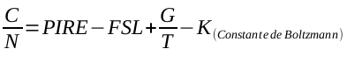
- 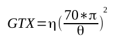
- 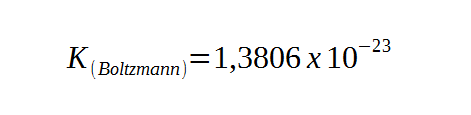
-
EXAMEN
EXAMEN TEORICO
- 1) En la época de 1957 comienza a era espacial con el satélite: sputnik-1 /intelsat /ECHO-1
- 2) Los satélites LEO se encuentran en una órbita geocéntrica con una altitud entre 2.000 km y hasta el límite de la órbita geosíncrona de 35.786 km: (Verdadero/Falso)
- 3) La banda de frecuencia (Ku) utiliza para Uplink: 12Ghz y Downlink: 14HHZ con un ancho de banda (Bw)=500Mhz? (Verdadero/Falso)
- 4) Un típico ________ consiste de un modulador de IF (Frecuencia intermedia), un convertidor de microondas de IF a RF (Radio frecuencia) y un amplificador de alta potencia (HPA) y un medio que limite la banda del espectro de salida (filtro pasa-banda de salida). Transmisor / Transponder / Enlace satelital
- 5) La relación entre la ganancia y la directividad es la eficiencia (n)? (Verdadero/Falso)
- 6) La potencia de la señal se reduce por el ensanchamiento del frente de onda en lo que se conoce como : Perdidas por distancia / Perdidas en el espacio libre / perdidas por absorción gaseosas
- 7) Un transponder es un dispositivo de Recepcion de IF y Transmision en RF hacia un punto en tierra? (Verdadero/Falso)
- 8) EL EFECTO DUPPLER se presenta cuando el desplazamiento de la fuente provoca una variación de la frecuencia recibida por tal motivo se obtiene consecuencias como (Desintonizacion del receptor-Distorsión del espectro) : (Verdadero/Falso)
- 9)
Estos son los valores de la constante de Boltzman y la velocidad de la luz :
1,3806X〖10〗^(-23) y 3x〖10〗^8
1,3806X〖10〗^(-25) y 3x〖10〗^8
1,3806X〖10〗^(-23) y 3x〖10〗^6
1,3806X〖10〗^(-28) y 3x〖10〗^8
- 10)La vida útil de un satélite depende del combustible disponible para poder trasladarlo en su posición orbital, y esta duración es de aprox. 10 a unos 15 años, después de esto el satélite se convertirá en lo que denominamos "basura espacial". (Verdadero/Falso)
EXAMEN PRACTICO
Se tienen una estación terrena equipada por una antena de 4 metros de diámetro alimentado por una potencia de 100 Watts, con una frecuencia de 14Ghz para enlace Uplink donde se encuentra radiada a un satélite en la orbita GEO a una distancia de 36000km, el angulo de recepción de Ɵ3dB de 2 (Grados), la eficiencia en la estación terrena es η= 65% y en el satélite es de η =55%; en el satélite contamos con una potencia de 20 Watts con una frecuencia de trabajo de 12 Ghz que es irradiada con un Ɵ3dB de 4 (Grados), la estación terrena receptora tiene un diámetro de 6 (metros) con una η= 60% la temperatura del sistema está en T=290.
Con estos datos calcularemos los parámetros en los enlaces Uplink y Downlink:
1. Ganancia de transmisión
2. Potencia de transmisión
3. Potencia isotrópica radiada equivalente
4. Densidad de flujo
5. Perdidas en el espacio libre
6. Nivel isotrópico de recepción
7. Ganancia de Recepción
8. Nivel de recepción de la señal
9. Figura metrito
10. Portadora a ruido espectral
-
CONCLUSION
- 1) sputnik-1
- 2) F
- 3) F
- 4) Transmisor
- 5) V
- 6) Perdidas en el espacio libre
- 7) F
- 8) V
- 9)
1,3806X〖10〗^(-23) y 3x〖10〗^8
- 10) F
Respuestas Examen Teorico
Respuestas Examen Practico
Parametros UPLINK DOWNLINK Ganancia de Transmision 53 32 Potencia de Transmision 20 13,0102 Potencia Isotropica Radiada 73,4934 45,2175 Densidad de Flujo -28,6248 -49,911 Perdida en el espacio libre 206,4786 205,1596 Nivel Isotropico de Recepcion -132,9852 -159,9421 Ganancia de Recepcion 52,7648 55,3256 Nivel de Recepcion de la señal -80,2404 -104,6165 Figura merito 28,1408 30,7016 Portadora a ruido espectral -104,8644 99,3588